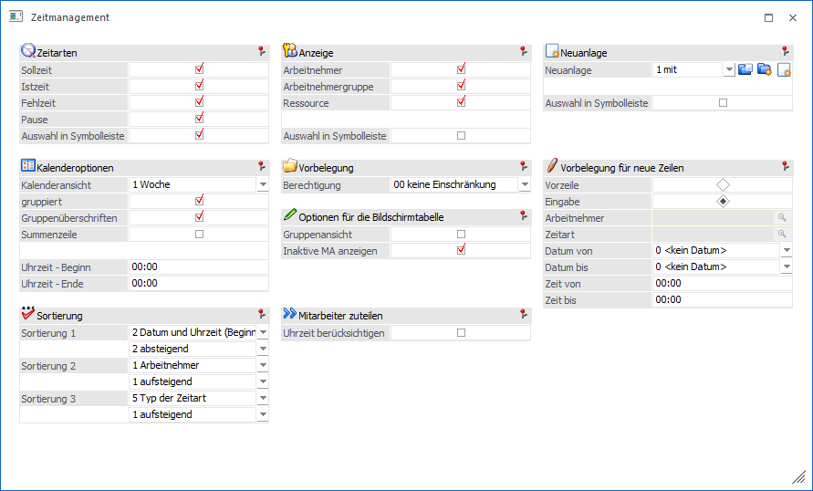
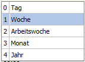
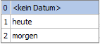
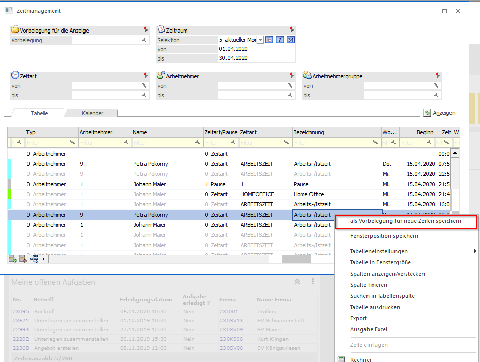

In diese Fenster gelangt man über den Button "Optionen" aus dem Zeitmanagement.

Zeitarten
In diesem Bereich kann über Checkboxen definiert werden, welche Zeitarten angezeigt werden sollen. Mit der Checkbox "Auswahl in Symbolleiste" werden die ausgewählten Zeitarten als Buttons im Kopfteil des Fensters Zeitmanagement angezeigt und können dann mittels Klick ein- und ausgeblendet werden.
Hinweis
Mit der Checkbox "Auswahl in Symbolliste" ist ein Neustart des Programmes notwendig.
Kalenderoptionen
In diesem Bereich kann die Standardansicht definiert werden, über eine Auswahllistbox können folgende Ansichten ausgewählt werden:

Ø Gruppiert
Mit dieser Checkbox werden die Arbeitnehmer bzw. Mitarbeiter links gruppiert angezeigt.
Ø Gruppenüberschrift
Mit dieser Checkbox werden die Gruppenüberschriften der Arbeitnehmergruppen angezeigt.
Ø Summenzeile
Mit dieser Checkbox kann gesteuert werden, ob eine Summenzeile angezeigt werden soll.
Ø Uhrzeit Beginn/Ende
Hier kann die Kernzeit für den Kalender definiert werden, d.h. wie die Einträge bei der Tagesansicht dargestellt werden sollen.
Anzeige
In diesem Bereich kann über Checkboxen definiert werden, welche Typen angezeigt werden sollen. Mit der Checkbox "Auswahl in Symbolleiste" werden die ausgewählten Typen als Buttons im Kopfteil des Fensters Zeitmanagement angezeigt und können dann mittels Klick ein- und ausgeblendet werden.
Hinweis:
Mit der Checkbox "Auswahl in Symbolliste" ist ein Neustart des Programmes notwendig.
Vorbelegung
In diesem Bereich kann eine Berechtigung für jede Vorbelegung vergeben werden.
Optionen für die Bildschirmtabelle
In diesem Bereich kann über die Checkbox "Gruppenansicht" gesteuert werden, dass aufgeteilte Arbeitnehmer- bzw. Mitarbeiterzeilen immer unterhalb der Arbeitnehmergruppe angezeigt werden. Ist die Checkbox deaktiviert, werden die Einträge nach Datum und Uhrzeit absteigend sortiert.
Ø Inaktive MA anzeigen
Wenn diese Option aktiviert ist, können auch die vorhandenen Zeilen von inaktiven AN/MA angezeigt werden. Aber auch wenn inaktive AN/MA angezeigt werden, können keine weiteren Zeilen über das Zeitmanagement erfasst werden.
Mitarbeiter zuteilen
Ø Uhrzeit berücksichtigen
Wenn diese Option aktiviert ist, wird beim Aufteilen die Uhrzeit eines Sollzeiteneintrags berücksichtigt, d.h. es können auch mehrere Uhrzeiten pro Tag aufgeteilt werden.
Neuanlage
Über eine Auswahllistbox kann ausgewählt werden, ob Zeilen nur neu erfasst oder auch bestehende Einträge geändert werden können. Mit der Checkbox "Auswahl in Symbolleiste" werden die Einstellungen bzw. Optionen als Buttons im Kopfteil des Fensters Zeitmanagement angezeigt und können dann mittels Klick ein- und ausgeblendet werden.
Hinweis:
Mit der Checkbox "Auswahl in Symbolliste" ist ein Neustart des Programmes notwendig.
Vorbelegung für neue Zeilen
In diesem Bereich kann über ein Radiobutton festgelegt werden, ob bei neuen Zeilen die Werte aus der Vorzeile übernommen oder ob bestimmte Werte fix vorbelegt werden sollen.
Mit der Option "Eingabe" können folgende Felder vorbelegt werden:
Ø Datum von - bis
Über eine Auswahllistbox können folgende Vorbelegungen für das Datum ausgewählt werden.

Ø Zeit von - bis
Eingabe der bzw. Uhrzeit.
Achtung
Die Felder Arbeitnehmer und Zeitart können festgelegt werden, wenn in einer bestehenden Zeile im Kontextmenü der Eintrag "als Vorbelegung für neue Zeilen speichern" ausgewählt wird.
